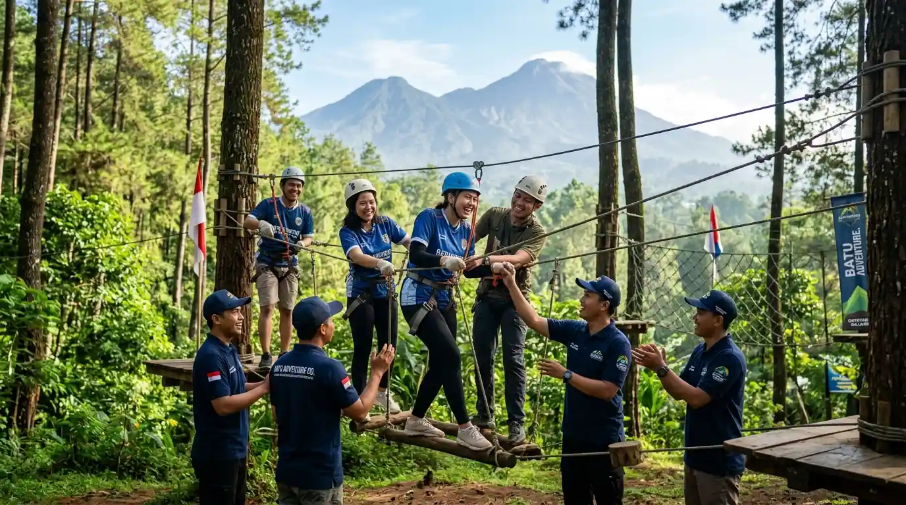

Malang dan Batu dikenal sebagai surga outbound di Jawa Timur. Dengan udara sejuk, pemandangan alam yang menawan, dan beragam pilihan lokasi, kedua kota ini menjadi favorit untuk kegiatan outbound, gathering, dan team building. Namun, memilih lokasi yang tepat memerlukan pertimbangan matang agar program berjalan lancar dan tujuan kegiatan tercapai.
Setiap kegiatan outbound memiliki tujuan yang berbeda. Apakah untuk mempererat kekompakan tim, melatih kepemimpinan, atau sekadar refreshing? Pilih lokasi yang mendukung aktivitas yang direncanakan. Untuk team building yang membutuhkan ruang luas, pilih lokasi dengan area terbuka yang luas. Untuk gathering santai, lokasi dengan pemandangan indah dan fasilitas nyaman lebih disarankan.
Lokasi outbound yang ideal adalah yang mudah dijangkau dengan kendaraan, baik bus besar maupun mobil pribadi. Perhatikan juga waktu tempuh dari titik kumpul. Lokasi yang terlalu jauh bisa membuat peserta kelelahan sebelum kegiatan dimulai. Untuk peserta yang membawa keluarga, pilih lokasi dengan akses jalan yang baik dan area parkir yang memadai.
Fasilitas seperti toilet, tempat istirahat, area makan, dan perlengkapan outbound sangat menentukan kenyamanan peserta. Pastikan lokasi yang Anda pilih menyediakan fasilitas yang memadai. Beberapa lokasi bahkan menyediakan paket lengkap termasuk konsumsi, perlengkapan games, dan instruktur profesional. Jangan ragu untuk menanyakan detail fasilitas sebelum memutuskan.
Malang dan Batu memiliki cuaca yang sejuk, namun musim hujan bisa mempengaruhi jadwal kegiatan. Periksa prakiraan cuaca sebelum menentukan tanggal. Pilih lokasi yang memiliki area indoor cadangan jika hujan turun. Untuk kegiatan di alam terbuka, pastikan medan aman dan tidak terlalu ekstrem, terutama jika peserta berasal dari berbagai usia.
Pastikan lokasi yang dipilih mampu menampung jumlah peserta Anda dengan nyaman. Jangan sampai area terlalu sesak sehingga mengganggu jalannya kegiatan. Keamanan juga menjadi prioritas utama: cek apakah lokasi memiliki tim medis, prosedur darurat, dan peralatan keselamatan yang memadai. Lokasi outbound yang baik biasanya memiliki sertifikat keamanan dan instruktur berpengalaman.
Beberapa lokasi outbound favorit di Malang dan Batu yang sering digunakan oleh perusahaan dan instansi antara lain:
Konsultasikan kebutuhan kegiatan Anda dengan tim kami. Kami siap membantu memilih lokasi terbaik di Malang dan Batu.
Konsultasi SekarangMemilih lokasi outbound di Malang dan Batu bukanlah perkara sepele. Dengan mempertimbangkan tujuan kegiatan, aksesibilitas, fasilitas, cuaca, dan keamanan, Anda dapat memastikan program outbound berjalan sukses dan memberikan dampak positif bagi tim. Manfaatkan kekayaan alam dan infrastruktur wisata Malang Raya untuk menciptakan pengalaman outbound yang tak terlupakan.
Konsultasikan kebutuhan lokasi dan program outbound Anda dengan tim profesional kami.